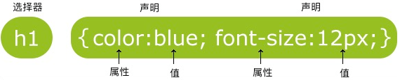

CSS语法

CSS 规则由两个主要的部分构成：选择器，以及一条或多条声明
每条声明由一个属性和一个值组成。
属性和值被冒号分开。不要在属性值与单位之间留有空格
CSS声明总是以;结束，声明以大括号{}括起来:
为了让CSS可读性更强，可以每行只描述一个属性
1
2
3
4
5p
{
color:red;
text-align:center;
}CSS注释以 / 开始, 以 / 结束
CSS创建
- 插入样式表的方法有三种，最好的方式是通过外部引用CSS文件
- 优先级别：内联样式Inline style > （内部样式）Internal style sheet >（外部样式）External style sheet > 浏览器默认样式
外部样式表
浏览器会从文件 mystyle.css 中读到样式声明，并根据它来格式文档。
rel即relationship，表明链接的文档是一个styleshhethref是路径
1
2
3<head>
<link rel="stylesheet" type="text/css" href="mystyle.css">
</head>外部样式表可以在任何文本编辑器中进行编辑。
文件不能包含任何的 html 标签。
样式表应该以 .css 扩展名进行保存。
内部样式表
当单个文档需要特殊的样式时，就应该使用内部样式表。
在HTML文档头部
<head>区域使用<style>元素 来包含CSS1
2
3
4
5
6<head>
<style type="text/css">
body {background-color:yellow;}
p {color:blue;}
</style>
</head>
内联式
当特殊的样式需要应用到个别元素时，就可以使用内联样式。 使用内联样式的方法是在相关的标签中使用”style” 属性。使用”style” 属性可以包含任何 CSS 属性。
1
<p style="color:sienna;margin-left:20px">这是一个段落。</p>
id和class
- id不能重复，class可以重复，两者的命名都不能用数字开头
- class的样式需要用.开头，id的样式需要用#开头
1 | #para1 |
CSS尺寸
属性有：
- height：设置元素的高度。
- line-height：设置行高。
- max-height：设置元素的最大高度。
- max-width：设置元素的最大宽度。
- min-height：设置元素的最小高度。
- min-width：设置元素的最小宽度。
- width：设置元素的宽度。
值的形式有:
- 像素为单位：px
- 百分比为单位： %
以em为单位，默认1em=16px，类似于百分比
值默认为
auto，也可以选择inherit，表示从从父元素继承属性的值。
CSS颜色
16进制：如果形式是aabbcc，可以简写为abc
1
2
3<p style="background-color:#FFFF00">
16进制设置的颜色
</p>rgb：
1
2
3<p style="background-color:rgb(255,255,0)">
RGB设置的颜色
</p>名称：
1
2
3<p style="background-color:yellow">
颜色名称设置的颜色
</p>
CSS文本
字体
font-family 属性设置文本的字体系列。应该设置几个字体名称作为一种”后备”机制，如果浏览器不支持第一种字体，他将尝试下一种字体。
如果字体系列的名称超过一个字，它必须用引号，如Font Family：”宋体”。
1
p{font-family:"Times New Roman", Times, serif;}
文本修饰
属性为text-decoration，值：
overline：上划线underline：下划线line-through：删除线
间距
- 行间距：
line-height - 字距：
letter-spacing - 单词之间的距离：
word-spacing
对齐方式
属性为text-align：
center：局中left：左对齐right：右对齐justify：每一行被展开为宽度相等，左，右外边距是对齐
文本转换
text-transform：
uppercase：大写lowercase：小写capitalize：每个单词的首字母大写。
文本缩进
指定文本的第一行的缩进：
1 | p {text-indent:50px;} |
文本方向
direction：
rtl：从右到左
禁用自动换行
1 | p {white-space:nowrap;} |
图片与文字的对齐
vertical-align:
text-top：顶端对齐text-bottom：底端对齐
文本阴影
1 | h1 {text-shadow:2px 2px #FF0000;} |
CSS背景
背景颜色
1 | body {background-color:#b0c4de;} |
背景图像
1 | body {background-image:url('paper.gif');} |
平铺
- 属性为
background-repeat，默认情况下，背景图像进行平铺重复显示，以覆盖整个元素实体：no-repeat：不平铺repeat-x：水平平铺repeat-y：垂直平铺
定位
- 属性为
background-position:- 用坐标的形式：
50px 50px - 直接用方向：
right top - 居中：
center，x居中可以用0 center，反之center 0
- 用坐标的形式：
大小
属性为background-size，可以设置长宽，也可以使用%缩放，不能简写
简写
当使用简写属性时，属性值的顺序为：
background-color
background-image
background-repeat
background-attachment
background-position
1
body {background:#ffffff url('img_tree.png') no-repeat right top;}
CSS边框
样式
属性为border-style：
solid：实线边框dashed：虚线边框dotted：点线边框double：两个边框。 两个边框的宽度和 border-width 的值相同groove、ridge、inset、outset：3D沟槽边框、脊边框、嵌入边框、突出边框。效果取决于边框的颜色值
值的数目：
- 一个：所有
- 两个：上下，左右
- 三个：上，左右，下
- 四个：上，右，下，左
边框宽度
属性border-width：
- 可以指定长度值，比如 2px 或 0.1em(单位为 px, pt, cm, em 等)，
- 使用 3 个关键字之一，它们分别是 thick 、medium（默认值） 和 thin。
边框颜色
border-color属性，单独使用是不起作用的，必须得先使用border-style来设置边框样式。
单独设置各边
1 | p |
简写属性
简写：
- border-width
- border-style (required)
- border-color
1 | border:5px solid red; |
如果只需要一边，则使用border-left、border-right等即可
CSS 显示 display
更改元素属性
可以通过display属性来改变改变一个元素显示：
block（块状）inline（行内）inline-block（行内块状）
隐藏
display:none：可以隐藏某个元素，且隐藏的元素不会占用任何空间visibility:hidden：可以隐藏某个元素，但隐藏的元素仍需占用与未隐藏之前一样的空间。也就是说，该元素虽然被隐藏了，但仍然会影响布局。
CSS 浮动 float
一个浮动元素会尽量向左或向右移动，直到它的外边缘碰到包含框或另一个浮动框的边框为止。
CSS边距/填充
边距
定义元素周围的空间
1 | margin-top:100px; |
简写
margin:25px 50px 75px 100px;分别是上，右，下，左margin:25px 50px 75px;分别是上，左右，下margin:25px 50px;分别是上下、左右margin:25px;所有边距
可以利用margin:0 auto;将元素居中。
填充
上下左右的内边距，同margin一样：
1 | padding-top:25px; |
- 会影响元素的宽和高